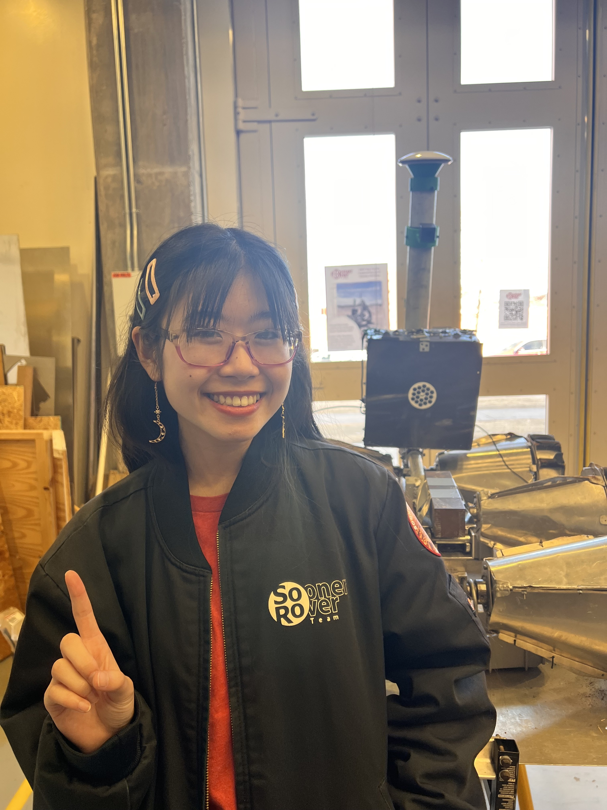

As an OU student, I've had the pleasure of participating in a variety of student organizations and programs, some of which include joining a competition team, studying abroad, leading in DEI-focused orgs, and peer-mentoring and volunteering through multiple programs on campus! Learn more about the things I love to do at OU below! ₊˚⊹♡
. ݁₊ ⊹ . ݁˖ . ݁
🌸
